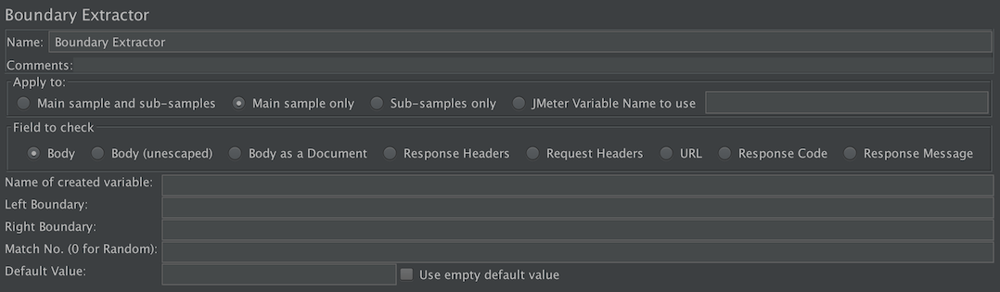
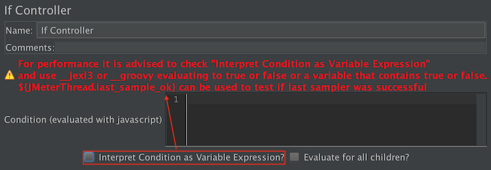

New Boundary Extractor element available which provides easy extraction with better performances

New JSON Assertion element available to assert on JSON responses.
New Precise Throughput Timer element available which produces Poisson arrivals with given constant throughput.
JMS Point-to-Point sampler has been enhanced with read, browse, clear options.
Best property values are now selected on many Test Elements to ensure best practices are the defaults:
Newly added If Controller now uses by default Expression which is the most performing option.

Newly added JSR223 Test Element now cache compiled script by default if language used provides this feature.
Loop controller and
ForEach Controller
now expose their current iteration as a variable named __jm__<Name of your element>__idx that
you can use like this for example for a Loop Controller named MyLoopController:
You can now call SampleResult#setIgnore() if you don't want your sampler to be visible in results
JavaSamplerContext used by AbstractJavaSamplerClient has been enhanced with new methods to easy plugin development.
JMeter now distributes additional Maven sources and javadoc artifacts into Maven repository
Plugins can now register listeners to be notified when a Test Plan is opened/closed
Live Reporting and Web Report
InfluxDB backend listener now allows you to add custom tags by adding them with prefix TAG_, see
Bug
61794
In Web Report responseTime distribution graph is more precise
Some bugfixes have been made on report generation, see
Bug
61900,
Bug
6190061956,
Bug
61899.
Graphs Latency Vs Request and Response Time Vs Request did not exceed 1000 RPS due to
Bug
61962
Configuration of JMeter environment
JVM settings for the JMeter start scripts can be placed in a separate file (bin/setenv.sh on Unix
and bin\setenv.bat on Windows), that gets called on startup. The startup script
itself does not have to be edited anymore.
Incompatible changes
Start time and End date of Thread Group have been removed, see
Bug
61549
In distributed testing, mode Hold has been removed. Use alternative and more efficient modes
For 3rd party plugins, the following method in org.apache.jmeter.gui.tree.JMeterTreeNode has been dropped for migration to Java 9 (
Bug
61529)
public Enumeration<JMeterTreeNode> children()
tearDown Thread Group will now run on stop and shutdown of a test by default. If you don't want this behaviour,
uncheck Run tearDown Thread Groups after shutdown of main threads on Test Plan element, see
Bug
61656
Properties sampleresult.getbytes.headers_size and sampleresult.getbytes.body_real_size have been dropped, see
Bug
61587
JMeter will now save your test plan whenever you run it. This behaviour can be controlled by property save_automatically_before_run, see
Bug
61731
Workbench element has been dropped, you now directly add Non Test Element as children of Test Plan. When loading a Test Plan that contains the element
JMeter will move the Mirror Server, Property Display and HTTP(s) Test Script Recorder elements as direct children of Test Plan. For
any other element, it will create a Test Fragment element called Workbench Test Fragment and move the elements in it.
Following classes have been dropped (org.apache.jmeter.functions.util.ArgumentEncoder, org.apache.jmeter.functions.util.ArgumentDecoder), see
Pull request #335
In JMS Point-to-Point sampler, setting timeout to 0 will now mean infinite timeout while previously it would be switched to 2000 ms, see
Bug
61829
When Assertions are at different scopes, they are executed starting with the most OUTER one to the most INNER one. See
Bug
61846
JMeter now starts by default using English locale. This change is due to missing translations in many supported languages.
You can change locale by modifying in jmeter and jmeter.bat (or preferably setenv.sh/setenv.bat) the JVM_ARGS system property values.
We'd also be very grateful if you can contribute translations in supported languages.
SwitchController now trims by default the content of switch to avoid issue related to unwanted spaces. See
Bug
61771
JMeter JVM heap settings have changed from -Xms512m -Xmx512m to -Xms1g -Xmx1g
Improvements
HTTP Samplers and Test Script Recorder
Pull request #316
-
Warn about empty truststore loading. Contributed by Vincent Herilier (https://github.com/vherilier)
Bug
61639
-
HTTP(S) Test Script Recorder: In request filtering tab, uncheck by default "Notify Child Listeners of filtered samplers"
Bug
61672
-
HTTP(S) Test Script Recorder: Have the ability to choose the sampler name while keeping the ability to just add a prefix
Bug
53957
-
HTTP Request: In Parameters tab, allow pasting of content coming from Firefox and Chrome (unparsed)
Bug
61587
-
Drop properties sampleresult.getbytes.headers_size and sampleresult.getbytes.body_real_size
Bug
61843
-
HTTP(S) Test Script Recorder: Add SAN to JMeter generated CA Certificate. Contributed by Matthew Buckett
Bug
61901
-
Support for https.cipherSuites System property. Contributed by Jeremy Arnold (jeremy at arnoldzoo.org)
Other samplers
Bug
61544
-
JMS Point-to-Point Sampler: Enhance communication styles with read, browse, clear. Based on a contribution by Benny van Wijngaarden (benny at smaragd-it.nl)
Bug
61829
-
JMS Point-to-Point: If Receive Queue is empty and a timeout is set, it is not taken into account. Contributed by Ubik Load Pack (support at ubikloadpack.com)
Bug
61762
-
Start Next Thread Loop should be used everywhere
Controllers
Bug
61675
-
If Controller: Use expression by default and add a warning when the other mode is used. Contributed by Ubik Load Pack (support at ubikloadpack.com)
Bug
61770
-
Module Controller: Inform user in UI that he needs to have at least one Controller in his plan. Contributed by Ubik Load Pack (support at ubikloadpack.com)
Bug
61771
-
SwitchController: Switch field should be trimmed by safety
Listeners
Bug
57760
-
View Results Tree: Cookie Header is wrongly shown as empty (no cookies) when viewing a recorder Sample Result. Contributed by Ubik Load Pack (support at ubikloadpack.com)
Bug
61769
-
View Results Tree: Use syntax highlighter in XPath Tester, JSON Path Tester and CSS/JQuery Tester. Contributed by Ubik Load Pack (support at ubikloadpack.com)
Bug
61776
-
View Results Tree: Expansion of Add expand/collapse all menu in render XML view. Contributed by Maxime Chassagneux and Graham Russell
Bug
60213
-
New component: Boundary based extractor
Bug
61845
-
New Component JSON Assertion based on AtlanBH JSON Path Assertion donated to JMeter-Plugins and migrated into JMeter core by Artem Fedorov (artem at blazemeter.com)
Bug
61931
-
New Component: Precise Throughput Timer, timer that produces Poisson arrivals with given constant throughput. Contributed by Vladimir Sitnikov (sitnikov.vladimir at gmail.com)
Bug
61644
-
HTTP Cache Manager: "Use Cache-Control/Expires header when processing GET requests" should be checked by default
Bug
61645
-
Response Assertion: Add ability to assert on Request Data
Bug
51140
-
Response Assertion: add ability to set a specific error/failure message that is later shown in the Assertion Result. Contributed by Ubik Load Pack (support at ubikloadpack.com)
Bug
61534
-
Convert AssertionError to a failed assertion, allowing users to use assert in their code. Fixing a regression introduced in 3.2
Bug
61756
-
Extractors: Improve label name "Reference name" to make it clear what it makes
Bug
61758
-
Apply to: field in Extractors, Assertions: When entering a value in JMeter Variable Name, the radio box JMeter Variable Name should be selected by default. Contributed by Ubik Load Pack (support at ubikloadpack.com)
Bug
61846
-
Scoped Assertion should follow same order of evaluation as Post Processors
Functions
Bug
61724
-
Add __digest function to provide computing of Hashes (SHA-XXX, MDX). Based on a contribution by orimarko at gmail.com
Bug
61735
-
Add __dateTimeConvert function to provide date formats conversions. Based on a contribution by orimarko at gmail.com
Bug
61760
-
Add __isPropDefined and __isVarDefined functions to know if property or variable exist. Contributed by orimarko at gmail.com
Bug
61759
-
Add __changeCase function to change different cases of a string. Based on a contribution by orimarko at gmail.com
Bug
61561
-
Function helper dialog should display exception in result
Bug
61738
-
Function Helper Dialog: Add Copy in Generate and clarify labels. Contributed by Ubik Load Pack (support at ubikloadpack.com)
Bug
62027
-
Help: Introduce property help.local to allow choosing between local (offline) documentation and online documentation
Bug
61593
-
Remove Detail, Add, Add from Clipboard, Delete buttons in Function Helper GUI
I18N
Bug
61606
-
Translate button Browse… in some elements (which use FileEditor class)
Bug
61747
-
HTTP(S) Test Script Recorder: add the missing doc to "Create transaction after request (ms)"
Report / Dashboard
Bug
61871
-
Reduce jmeter.reportgenerator.graph.responseTimeDistribution.property.set_granularity default value from 500ms to 100ms
Bug
61879
-
Remove useless files in HTML report template
General
Bug
61591
-
Drop Workbench from test tree. Implemented by Artem Fedorov (artem at blazemeter.com) and contributed by BlazeMeter Ltd.
Bug
61549
-
Thread Group: Remove start and end date
Bug
61529
-
Migration to Java 9. Partly contributed by Ubik Load Pack (support at ubikloadpack.com)
Bug
61709
-
SampleResult: Add a method setIgnore() to make JMeter ignore the SampleResult and not send it to listeners
Bug
61806
-
Allow to use SampleResult#setIgnore() in post-processors and assertions script (JSR223 elements)
Bug
61607
-
Add browse button in all BeanShell elements to select BeanShell script
Bug
61627
-
Don't clear LogView anymore when clicking on Warning/Errors Indicator
Bug
61629
-
Add Think Times to Children menu should not consider disabled elements
Bug
61655
-
SampleSender: Drop HoldSampleSender implementation
Bug
61656
-
tearDown Thread Group should run by default at stop or shutdown of test
Bug
61659
-
JMeterVariables#get() should apply toString() on non string objects
Bug
61555
-
Metaspace should be restricted as default
Bug
61693
-
JMeter aware of Docker (-XX:+UnlockExperimentalVMOptions-XX:+UseCGroupMemoryLimitForHeap)
Pull request #351
-
Fixed about dialog position on first view. Contributed by Graham Russell (graham at ham1.co.uk)
Pull request #352
-
Menu bar - added mnemonics to more menu items. Contributed by Graham Russell (graham at ham1.co.uk)
Pull request #353
-
Re-wrote some existing tests in Spock. Contributed by Graham Russell (graham at ham1.co.uk)
Bug
61919
-
UX: Reorder Menus. Contributed by Graham Russell (graham at ham1.co.uk)
Bug
61920
-
Plugins: Add ability to listen to Test Plan loading/closing. Contributed by Peter Doornbosch (https://bitbucket.org/pjtr/)
Bug
61935
-
Plugins: Let GUI component (dynamically) decide whether it can be added via the menu or not. Contributed by Peter Doornbosch (https://bitbucket.org/pjtr/)
Bug
61969
-
When changing LAF through GUI, user should be informed that it is better to restart
Bug
61970
-
JMeter now uses English as default locale to avoid missing translations in some locales make UI look weird
Bug
56368
-
Create and Deploy source artifacts to Maven central
Bug
61973
-
Create and Deploy javadoc artifacts to Maven central
Bug
61651
-
Improve OS test coverage. Partly contributed by Aleksei Balan (abalanonline at gmail.com)
Pull request #319
-
Removed commented out code. Contributed by Graham Russell (graham at ham1.co.uk)
Pull request #322
-
General JavaDoc cleanup. Contributed by Graham Russell (graham at ham1.co.uk)
Pull request #323
-
Extracted method and used streams to improve readability. Contributed by Graham Russell (graham at ham1.co.uk)
Pull request #324
-
Save backup refactor. Contributed by Graham Russell (graham at ham1.co.uk)
Pull request #327
-
Utilising more modern Java, simplifying code and formatting code and comments. Contributed by Graham Russell (graham at ham1.co.uk)
Pull request #332
-
Add the spock framework for groovy unit tests. Contributed by Graham Russell (graham at ham1.co.uk)
Pull request #334
-
Enable running of JUnit tests from within IntelliJ with default config. Contributed by Graham Russell (graham at ham1.co.uk)
Pull request #335
-
Removed functions.util.* as they don't seem to be used (for many years). Contributed by Graham Russell (graham at ham1.co.uk)
Bug
61867
-
Pull request #345
-
Updated to latest checkstyle (v8.5), Added many more rules to checkstyle, Included checking of test files and more file types. Contributed by Graham Russell (graham at ham1.co.uk)
Pull request #350
-
Parallelised unit tests. Contributed by Graham Russell (graham at ham1.co.uk)
Bug
61966
-
Setup Test Results Analyzer in jenkins
Pull request #343
-
Reduce the size of some images in the documentation. Contributed by Graham Russell (graham at ham1.co.uk)
Bug fixes
HTTP Samplers and Test Script Recorder
Bug
61569
-
JMS Point-to-Point Test Plan: Synchronization issue when putting reply. Contributed by Igor Panainte (panainte.i at gmail.com)
Other Samplers
Bug
61698
-
Test Action: It stop is selected, samplers following Test Action can run
Bug
61707
-
Test Action: Target is ignored when pause is selected, so it should be disabled
Bug
61827
-
JMSPublisher: Don't add new line at the end of the file. Contributed by Graham Russell (graham at ham1.co.uk)
Controllers
Bug
61556
-
Clarify in documentation performance impacts of ${} var usage in IfController and groovy. Contributed by Justin McCartney (be_strew at yahoo.co.uk)
Bug
61713
-
Test Fragment has option to Change Controller and Insert Parent. Contributed by Ubik Load Pack (support at ubikloadpack.com)
Bug
61965
-
Module and Include Controller should not allow to add meaningless elements in their context.
Bug
62062
-
ThroughputController: StackOverFlowError triggered when throughput=0 (Total Executions or Percentage Executions) Partly implemented by Artem Fedorov (artem.fedorov at blazemeter.com) and contributed by BlazeMeter Ltd.
Listeners
Bug
61742
-
BackendListener: fix default value for backend_graphite.send_interval
Bug
61878
-
BackendListener: NPE if BackendListenerClient#getDefaultParameters returns null
Bug
61950
-
View Results Tree: Content-Type audio/mpegurl is wrongly considered as binary
Bug
61619
-
In Function Helper Dialog, the 1st function doesn't display default parameters
Bug
61628
-
If split string has empty separator default separator is not used
Bug
61752
-
__RandomDate: Function does not allow missing last parameter used for variable name
I18N
Report / Dashboard
Bug
61807
-
Web Report: fix error in getTop5ErrorMetrics. Contributed by Graham Russell (graham at ham1.co.uk)
Bug
61900
-
Report Generator: Report generation fails if separator is a regex reserved char like |
Bug
61925
-
CsvSampleReader does not increment row in nextSample(). Contributed by Graham Russell (graham at ham1.co.uk)
Bug
61956
-
Report Generation: -f of -forceDeleteResultFile option does not work. Contributed by Ubik Load Pack (support at ubikloadpack.com)
Bug
61899
-
Report Generation: When jmeter.save.saveservice.print_field_names is false and sample_variables are set report generation fails. Contributed by Ubik Load Pack (support at ubikloadpack.com)
Bug
61962
-
Latency Vs Request and Response Time Vs Request graphs do not exceed 1000 RPS. Contributed by Ubik Load Pack (support at ubikloadpack.com)
General
Bug
61661
-
Avoid startup/shutdown problems due to 3rd party Thread Listener plugins throwing RuntimeException
Bug
61625
-
File Editor used in BeanInfo behaves strangely under all LAFs with impact on CSVDataSet, JSR223, BSF, Beanshell Element
Bug
61844
-
Maven pom.xml: Libraries used in testing should have scope test
Bug
61842
-
Saving with no changes causes a save and duplicate, identical backup file
Thanks
We thank all contributors mentioned in bug and improvement sections above:
Vladimir Sitnikov (sitnikov.vladimir at gmail.com)
Konstantin Kalinin (kkalinin at hotmail.com)
We also thank bug reporters who helped us improve JMeter.
For this release we want to give special thanks to the following reporters for the clear reports and tests made after our fixes:
user7294900 on Stackoverflow (orimarko at gmail.com)
The Once Only controller behaves correctly under a Thread Group or Loop Controller,
but otherwise its behaviour is not consistent (or clearly specified).
The numbers that appear to the left of the green box are the number of active threads / total number of threads,
the total number of threads only applies to a locally run test, otherwise it will show 0 (see
Bug
55510).
Note that under some windows systems you may have this WARNING:
java.util.prefs.WindowsPreferences
WARNING: Could not open/create prefs root node Software\JavaSoft\Prefs at root 0
x80000002. Windows RegCreateKeyEx(…) returned error code 5.
The fix is to run JMeter as Administrator, it will create the registry key for you, then you can restart JMeter as a normal user and you won't have the warning anymore.
You may encounter the following error:
java.security.cert.CertificateException: Certificates does not conform to algorithm constraints
if you run a HTTPS request on a web site with a SSL certificate (itself or one of SSL certificates in its chain of trust) with a signature
algorithm using MD2 (like md2WithRSAEncryption) or with a SSL certificate with a size lower than 1024 bits.
This error is related to increased security in Java 8+.
To allow you to perform your HTTPS request, you can downgrade the security of your Java installation by editing
the Java jdk.certpath.disabledAlgorithms property. Remove the MD2 value or the constraint on size, depending on your case.
This property is in this file:
Under Mac OSX Aggregate Graph will show wrong values due to mirroring effect on numbers.
This is due to a known Java bug, see Bug JDK-8065373
The fix is to use JDK8_u45 or later.
View Results Tree may fail to display some HTML code under HTML renderer, see
Bug
54586.
This is due to a known Java bug which fails to parse "px" units in row/col attributes.
See Bug JDK-8031109
The fix is to use JDK9 b65 or later.
JTable selection with keyboard (SHIFT + up/down) is totally unusable with Java 7 on Mac OSX.
This is due to a known Java bug JDK-8025126
The fix is to use JDK 8 b132 or later.

{kind=link}


{kind=link}
{kind=link}
{kind=link}
{kind=link}
{kind=link}
{kind=link}